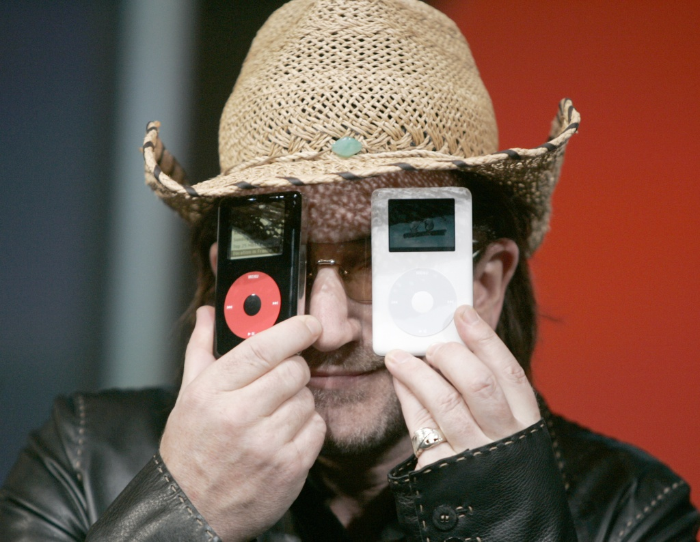
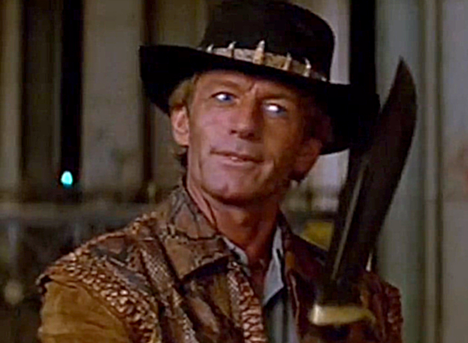
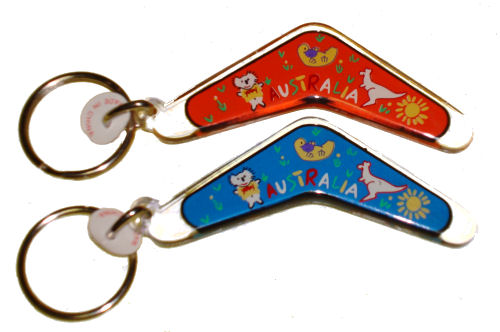
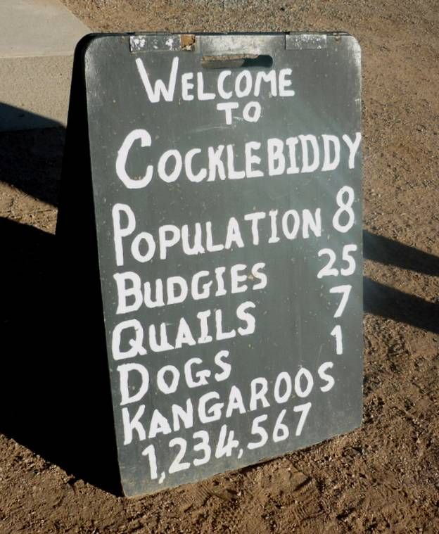

U 2 can U2F

[pic unrelated]
Hello!
Rob N ★
@robn
Australian
Two-factor authentication
Something you know
- Password

Something you have
- TOTP code
- SMS
- Hardware token
Universal two-factor (U2F)

- USB-based hardware token
- Single touch to activate
- Receives challenges from the server and signs them
- Yubico, Happlink, Nitrokey, Neowave, Hypersecu, Feitian
- Starts around $10 (Nitrokey U2F)
Universal two-factor (U2F)
- USB-based hardware token
- Single touch to activate
- Receives challenges from the server and signs them
- Yubico, Happlink, Nitrokey, Neowave, Hypersecu, Feitian
- Starts around $10 (Nitrokey U2F)
U2F-capable services
- Dropbox
- Github
- pam-u2f (via libu2f)
- FastMail (~ end of July)
- [… your service here …]
Authen::U2F
- A pure-Perl implementation of the U2F server spec
- Three functions:
- Generate challenges
- Verify registration signatures
- Verify authentication signatures
- Comes with example servers for libu2f and Chromium-based browsers
Dinner time
- Your service is secure, your users are happy…
- Time to go home and have your dinner
- Ask me about U2F
- Ask me about Australia
- Slides and demo at robn.io (later today)